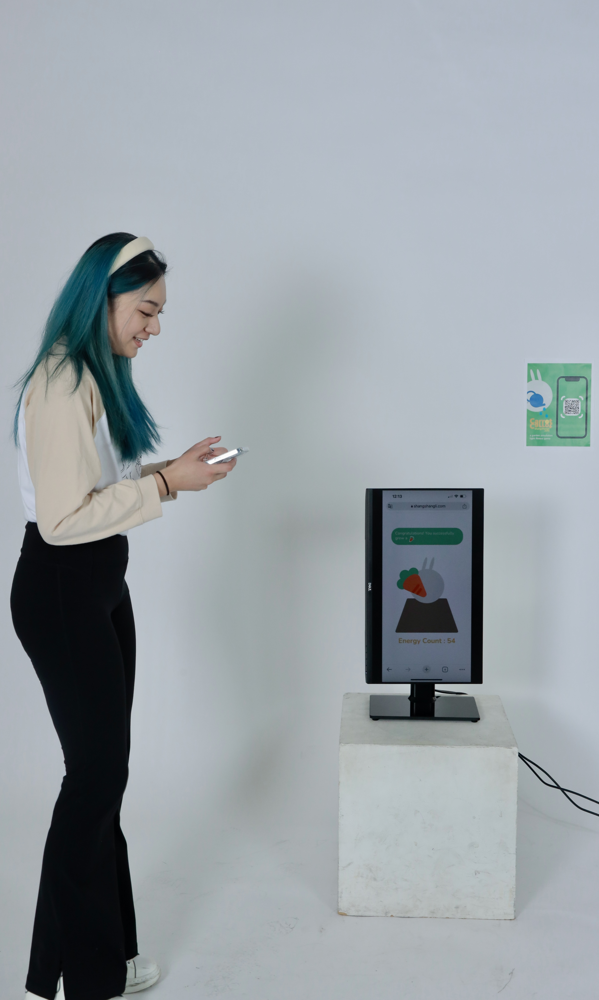
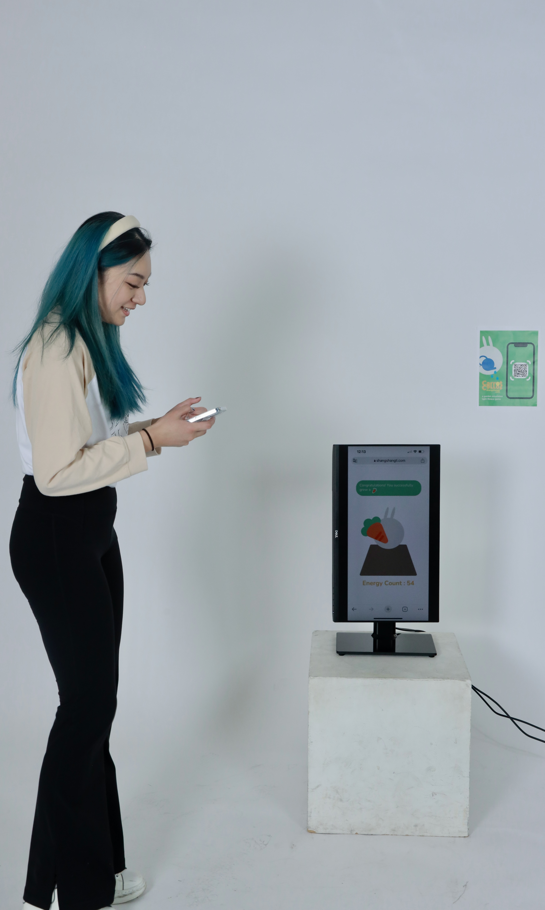

The game is designed for couch potatoes or users who need encouragement to start their fitness journey. A user who feels hopeless about losing weight may also be motivated by using the app to see the concrete result transformed from the effort on fitness. Users will control RabbitRabbit to run a farm and gain coins from every movement in daily life. Users can also trigger and watch different working animations through exercises like hoeing the ground or planting crops. The coins can unlock more rabbit working animations, buy different crops, and upgrade the farm buildings. In later stages of the game, users can also purchase rabbit skins and other decorative items with coins.

 

The game’s unique point of view is not to push users to exercise but to encourage users to develop healthy habits and stick to them naturally. CarrotCarrot provides a non-judgmental environment that allows users to set their own light goals and feel accomplished and rewarded for their progress. The various animations of the rabbit character make the exercise process less tedious and stressful. CarrotCarrot’s simulation elements provide a tangible way for users to see their progress and stay motivated without the stress of setting specific exercise goals or finishing a to-do list.
Design & Development Tool
- p5.js
- Visual Studio
- Illustrator
- Figma
- Maya
- Unity
For Prototype
Programming Languages
- JavaScript
- HTML
- CSS
- C#
For Prototype